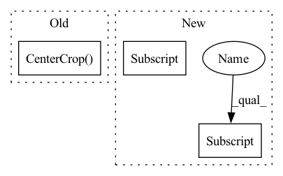

Pattern ID :6899

Before Change
val_transform = T.Compose(
T.Resize(tuple(map(lambda x: int(x / 0.9), cfg["EVAL"]["IMAGE_SIZE"]))),
T.CenterCrop(cfg["EVAL"]["IMAGE_SIZE"]),
T.ToTensor(),
T.Normalize([0.485, 0.456, 0.406], [0.229, 0.224, 0.225])
)
After Change
def main(cfg):
device = torch.device(cfg["DEVICE"])
model = get_model(cfg["MODEL"]["NAME"], cfg["MODEL"]["VARIANT"], cfg["MODEL_PATH"], cfg["DATASET"]["NUM_CLASSES"], cfg["EVAL"]["IMAGE_SIZE"][0])
model = model.to(device)
_, val_transform = get_transforms(cfg)
In pattern: SUPERPATTERN
Frequency: 4
Non-data size: 3
Instances
Fragment ID: 23260470
Project Name: sithu31296/sota-backbones
Commit Name: 73c841ee1e7c55eae40dcccc6437b08fea7469bf
Time: 2021-07-07
Author: sithu31296@gmail.com
File Name: tools/val.py
M Class Name: AnonimousClass
N Class Name: AnonimousClass
M Method Name: main(1)
N Method Name: main(1)
M Parent Class:
N Parent Class:
M File Name: tools/val.py
N File Name: tools/val.py
M Start Line: 44
M End Line: 57
N Start Line: 46
N End Line: 50
'>
Before Change
self.transform= transforms.Compose([//transforms.ToPILImage(),
transforms.Resize(256),
transforms.CenterCrop(224),
transforms.ToTensor(),
transforms.Normalize([0, 0, 0], [1, 1, 1])
])
After Change
if data_root[-3:]=="csv":
self.r=pd.read_csv(data_root)
self.options = options
if "radiomics_path" in options["general"].keys():
self.radiomics_path = options["general"]["radiomics_path"]
os.makedirs(self.radiomics_path, exist_ok=True)
else:
self.radiomics_path = []
'>
Fragment ID: 23260469
Project Name: chenwwweixiang/opencoviddetector
Commit Name: 84a1767a9eb9831c45931c7d04c1e6951d2eb322
Time: 2020-04-25
Author: chenwx_thu@foxmail.com
File Name: data/dataset.py
M Class Name: NCPJPGtestDataset_new
N Class Name: NCPJPGtestDataset_new
M Method Name: __init__(8)
N Method Name: __init__(7)
M Parent Class: Dataset
N Parent Class: Dataset
M File Name: data/dataset.py
N File Name: data/dataset.py
M Start Line: 826
M End Line: 827
N Start Line: 851
N End Line: 873
'>
Before Change
transforms.Normalize([0, 0, 0], [1, 1, 1])
])
self.test_augmentation = transforms.Compose([transforms.Resize(256),
transforms.CenterCrop(224),
transforms.ToTensor(),
transforms.Normalize([0, 0, 0], [1, 1, 1])
])
After Change
self.padding = padding
self.data = []
self.options=options
if "radiomics_path" in options["general"].keys():
self.radiomics_path = options["general"]["radiomics_path"]
os.makedirs(self.radiomics_path,exist_ok=True)
else:
self.radiomics_path=[]
'>
Fragment ID: 23260474
Project Name: chenwwweixiang/opencoviddetector
Commit Name: 84a1767a9eb9831c45931c7d04c1e6951d2eb322
Time: 2020-04-25
Author: chenwx_thu@foxmail.com
File Name: data/dataset.py
M Class Name: NCPJPGDataset_new
N Class Name: NCPJPGDataset_new
M Method Name: __init__(8)
N Method Name: __init__(7)
M Parent Class: Dataset
N Parent Class: Dataset
M File Name: data/dataset.py
N File Name: data/dataset.py
M Start Line: 700
M End Line: 711
N Start Line: 695
N End Line: 721